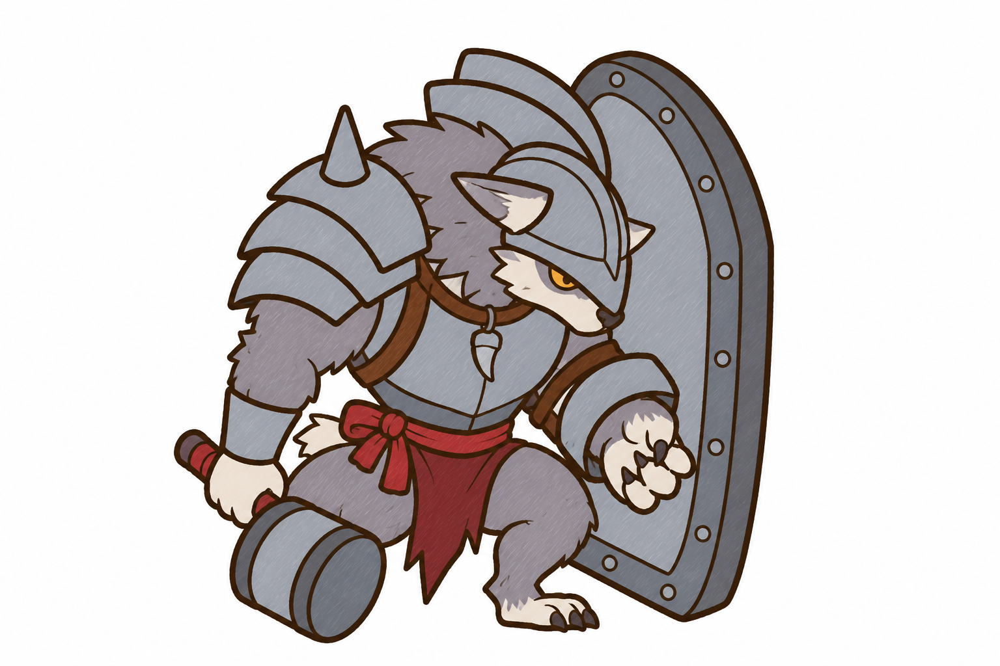
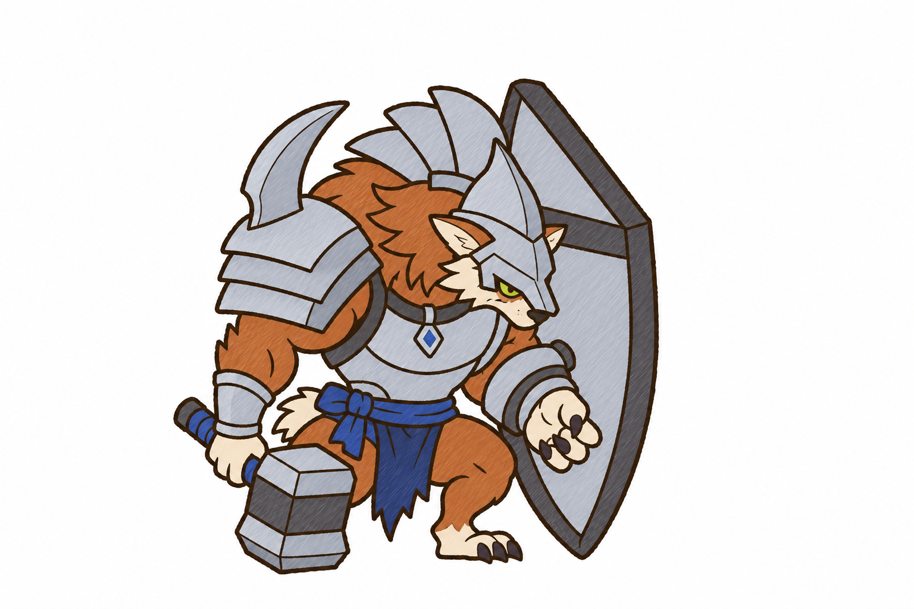
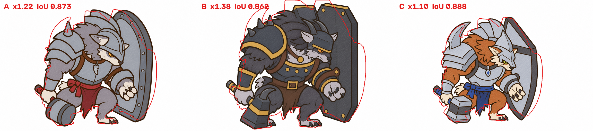

Con gốc monster_3428 (khung 0 idle): chỉ để so dáng, chỗ, cỡ từng mảnh

A: chưa gen
'">A sói xám tro, giáp thép xám + đỏ thẫm: mũ thép tròn một sống, mặt nạ mõm nhọn, cổ áo thép hai lớp, giáp vai ba lá + gai nón thẳng, giáp ngực, đai vải đỏ, búa đầu trống tròn, khiên tháp đỉnh vòmB sói đen than, giáp gang + đồng thau: mũ đỉnh bằng, mặt nạ khe ngang viền đồng, hai vây sắt vuốt sau, giáp vai vòm + ba gai ngắn, giáp ngực ba đinh đồng, thắt lưng da khoá đồng, búa có mỏ, khiên vát góc

C: chưa gen'">C sói nâu đỏ, giáp bạc + xanh lam: mũ chóp nhọn, mặt nạ mõm sói có thanh che mũi, tấm gáy ba lá xoè, giáp vai ba lá + vây lưỡi cong, giáp ngực hai lớp, búa tạ đầu vuông, khiên hình diều

Viền đỏ = hình bóng con gốc, co cho bằng cỡ từng concept (GPT vẽ to hơn gốc: A ×1,22, B ×1,38, C ×1,10). Độ khớp dáng A 0,87 / B 0,86 / C 0,89: thân, tay, chân, đầu, búa trùng chỗ. Lệch: cả ba vẽ KHIÊN hẹp hơn khiên gốc (gốc loe rộng sang phải); tai gần dựng đứng trên mũ thay vì chĩa ngang như gốc (lúc làm mảnh sẽ vẽ theo khung tai gốc). B: mỏ búa cong vểnh lên trông như cái sừng. C: vây lưỡi cong trên vai gần như cùng hình bóng sừng gốc (chỉ đổi chất bạc)
Mổ rig gốc
Mảnh theo nhóm: đầu (mặt nạ, mảnh đỉnh, mặt, tai, bờm), tấm gáy (gắn ngực), giáp vai sừng, khiên (gắn cẳng tay xa), búa (gắn nắm tay gần), tay, chân, thân, đuôiTừng mảnh 1–25 (thứ tự vẽ, cỡ, xương bám)Từng mảnh 26–41
Clip gốc sẽ dùng
idle = idle_01 (giống gốc)walk = run_01 (giống gốc)attack (lao lên gõ búa) và cast (lấy đà ném búa): nguồn skill_01 (nhấc búa, quật)appear (nhặt khiên lên, gầm): nguồn skill_02 (giơ khiên qua đầu, khiên úp đất) + mặt há miệng gen thêmchiêu cuối pha 1: skill_05 vào thế che khiênchiêu cuối pha giữ + lao xé gió húc: skill_03 (thế che khiên)chiêu cuối pha về: skill_04 đứng dậydie = die_01 (giống gốc: búa rơi, đổ sập lên khiên)